Reject an image by adding its slug to public/charades/charades-easy/reject.txt (append ! to keep it word-only), then re-run node scripts/genimages.mjs.
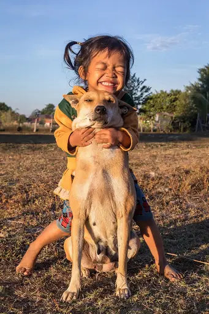
Hugging hugging CC BY-SA 4.0 · Basile Morin · source
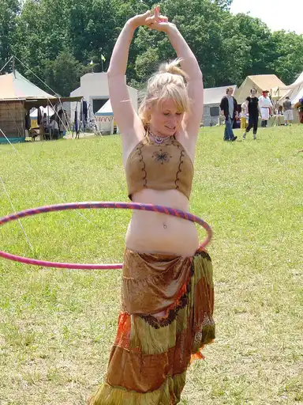
Hula hoop hula-hoop CC BY-SA 2.0 · greyloch · source
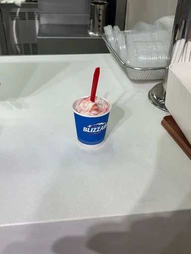
Ice cream ice-cream CC BY 4.0 · MichaellaaRubio · source
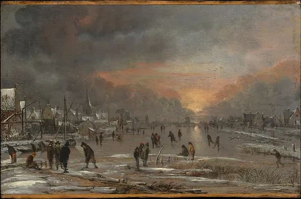
Ice skating ice-skating CC0 · Aert van der Neer · source
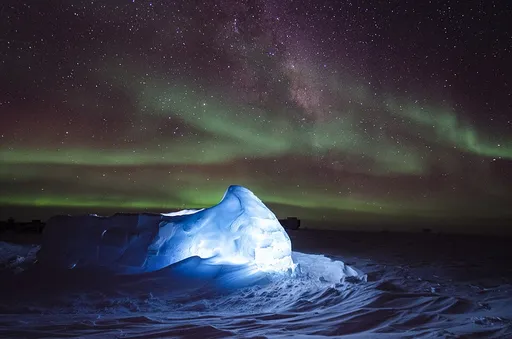
Igloo igloo Public domain · Ross Burgener · source
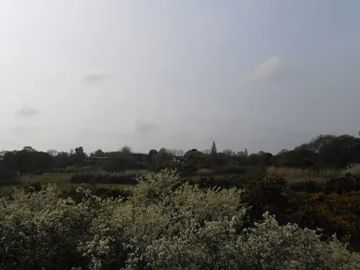
Itching itching CC BY-SA 2.0 · Basher Eyre · source
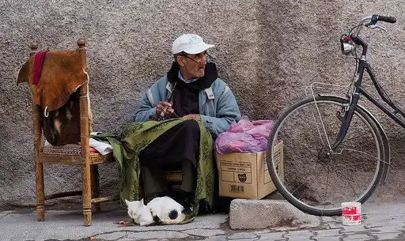
Jacket jacket CC BY-SA 4.0 · Petar Milošević · source
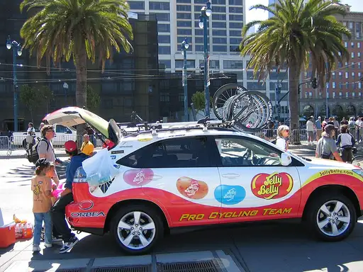
Jelly jelly CC BY 2.0 · Dan Harrelson from San Ramon, CA, USA · source
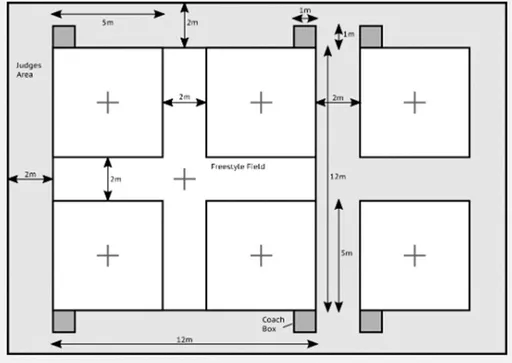
Jump rope jump-rope CC BY-SA 4.0 · Koy.angkana · source
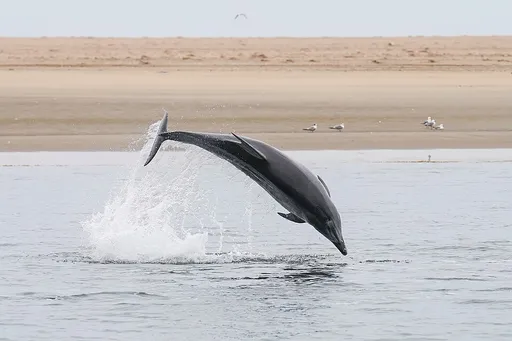
Jumping jumping CC BY-SA 4.0 · Giles Laurent · source
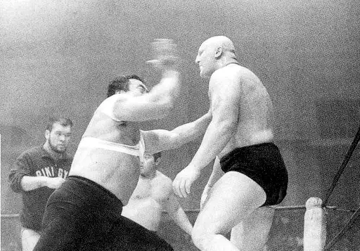
Karate chop karate-chop Public domain · Unknown authorUnknown author · source